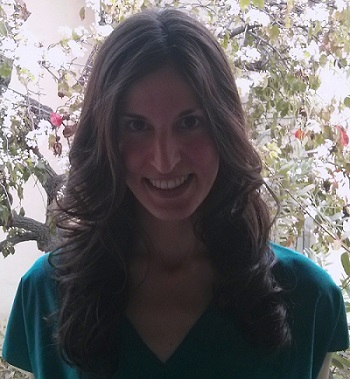

Theodora Chaspari
B.A., 2010, National Technical University of Athens, Electrical and Computer Engineering
M.S., 2012, University of Southern California, Electrical Engineering
Theodora's research focuses on developing methods for representing psychophysiological
signals, investigating their co-evolution between individuals across time and analyzing their association with observed
behavioral aspects of interaction. She works on methods to reliably remove noise artifacts and measure signal characteristics.
Her interests also involve ways to quantify the coordination patterns of bio-signals between people. She is currently a PhD
student in Signal Analysis and Interpretation Laboratory (SAIL) at USC.